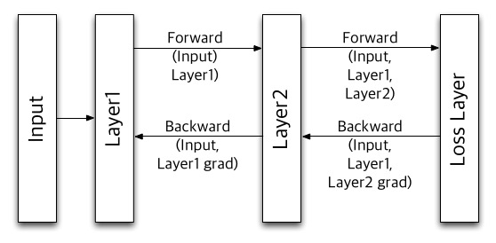

Due Sunday, April 26, 2015 @ 11:59pm
IMPORTANT INFO
Project 4 can be done on your local machines. However, We recommend you do this project on the hive machines. It requires substantial dataset and software packages including Hadoop, Spark, numpy, and Cython, and installing them is very time-consuming.
Updates
- No updates yet!
Goals
The goal of this project is to get you familiar with the MapReduce programming model using the Apache Spark framework. In the first part you will optimize convolutional neural networks(CNN), a sort of the deep learning algorithms, with the MapReduce framework. In the second part of the project, you will run your implementation on a large cluster of Amazon Web Services Elastic Compute Cloud (AWS EC2) servers in order to crunch through a large problem. We hope that by doing this project you will gain an appreciation for the MapReduce programming model, and at the same time pick up a very marketable skill.
Background
In Project 3, you optimized the evaluations of the CNN written in C. Now, in this project, you will optimize the training(or learning) of the model in neural networks using Spark in python.
Image Classification, Evaluation, and Learning
The image classification problem is the task of assigning an input image one label from a fixed set of categories. To do this, the image classifiers evaluate the scores of each category, and choose the highest among them. It is very unclear how to write the code for the evaluation, but instead, we feed input images to the classifiers to make them learn what the evaluation models look like.
For prediction, we evaluate the each layer's forward passes to obtain the scores. For learning, we evaluate the loss function, calculate the gradients, and update the parameters to minimize the loss function. For this reason, we evaluate the backward passes as well as the forward passes, and iterate this process multiple times. Thus, learning is computationally much heavier than prediction.

This diagram shows how the learning of a two-layer network is pipelined. First, Layer1 evaluates its forward function using the input data, and passes the result to Layer2. Layer2 also evaluates its forward function, and passes its value to the Loss Layer. Note that all layer values should be passed through the forward passes since they are used in the backward functions later.
The Loss Layer computes the gradient on Layer2 as well as the loss function using Layer2's value, and pass the gradient to Layer2. Next, Layer2 evaluates the backward function with its gradient and Layer1's value to generate Layer1's gradient and to update its parameters. Finally, Layer1 evaluates its backward function to update its parameters.
This process updates the parameters gradually, so we iterate it multiple times. Note that in the Apache Spark framework, iterations are overlapped like the CPU pipeline.
Some careful readers may notice that various image classifiers are composed in the same fashion. Thus, in this project, you will compose the forward and backward passes using Spark for three kinds of classifiers from the simplest to the deep CNN.
Step 0: Obtaining the Files & Getting Started
Similarly to Project 3, we will be distributing the project files through Github. An abridged version of the commands is reproduced below:
cd ~ # Make sure you are outside of any existing repositories (eg. ~/work) git clone git@github.com:cs61c-spring2015/proj4-XX-YY.git cd proj4-XX-YY # Go inside the directory that was created git remote add proj4_starter git@github.com:cs61c-spring2015/proj4_starter git fetch proj4_starter git merge proj4_starter/master -m "merge proj4 skeleton code"
Matrix Versions of the Classifiers
The reference implementations of three classifiers are provided in matrix/. The matrix versions manipulate images as one big matrix.
Each classifier(matrix/linear.py, matrix/nn.py, matrix/cnn.py) inherits the Classifier class in matrix/classifier.py. There two main methods in Classifier : train() and validate(). train() iterates parameter tuning using forward() and backward(), and validate calculates the accuracy of the classifier by evaluating the scores for test images using forward(). The two methods, forward() and backward(), should be defined in sub-classes, representing the forward and backward passes, respectively.
We have three classifiers included: a linear classifier, a two-layer fully connected neural network, and a deep convolutional neural network. You will compose the spark versions of these three classifiers step by step. For now, let's just run them first. To train the linear classifier, which is the simplest and fastest, but the most inaccurate classifier, run:
make matrix-linear
To train the two-layer fully connected neural network, which is slightly more accuracy than the linear classifier:
make matrix-nn
Finally, to train the deep convolutional neural network, which can achieve up to 80% of accuracy, but is painfully slow even though we run a single iteration:
make matrix-cnn
In fact, it loads a pre-trained network, and this is why it can achieve such accuracy. You can easily see that why we would love to optimize it.
Do not edit any files in matrix/. The tester compares your spark versions with the matrix versions provided. Any fix is highly likely to result in a zero for this project.
Layer Functions
To compose classifiers, we provide the forward and the backward functions in util/layer.py. All layer functions serve as "Lego blocks" to build any image classifers. You can see how these functions are used in matrix/linear.py, matrix/nn.py, and matrix/cnn.py. Generally, you do not have to understand what each layer function does, but you need to understand how the outputs of each layer function are used and how the inputs are passed to another layer function from the code of matrix versions. You will also use the same functions for your spark versions. Thus, don't worry about the situation where you will implement your own layer functions.
Do not edit util/layer.py. It is also likely to result in risking your points for this project.
Spark Versions of the Classifiers
We provide you the templates for your spark versions of the classifiers in spark/, but let's first visit spark.py. It splits a big matrix into smaller sub-matrices, and creates RDDs for learning and validation. Thus, you have to use transforms and actions on the RDDs with the layer functions. For more information on actions and transforms, visit here. Your final goal is to port the deep CNN to spark, but we start with the easiest one to get familiar with Spark and MapReduce.
You can also try your spark versions, but make sure run and pass all the tests first. To train the linear classifier, run:
make spark-linear
To train the two-layer fully-connected neural network, run:
make spark-nn
To train the deep CNN, run:
make spark-cnn
Step 1: Linear Classifier
Let's start with the simplest classifier having just one layer. Fill in forward() and backward() in spark/linear.py. You may want to reference matrix/linear.py for this step. Also, note that you should use the same layer functions as in matrix/linear.py.
In the forward pass, key/value pairs are given as inputs, but note that keys are not important in this case. We equally divide the input data set into smaller data chunks, and can apply the layer functions to individual data chunks in parallel. In the backward pass, the keys are detached, and to compute the loss and the gradients on the parameters, you should reduce them regardless of the keys.
We provide you the implementation for the loss function in Step 1, because it requires background knowledge on the loss function. However, you should implement the loss functions by yourself for other classifiers.
To check the sanity of your code, run:
make test-linear
This will compare your spark version with the matrix version.
Step 2: Fully-Connected Neural Network
Now, let's move onto the fully-connected neural network having three layers in total. Fill in forward() and backward() in spark/nn.py. You may want to reference matrix/nn.py. Think carefully what values should be passed one RDD to another. Also, you have to update the parameters of two layers.
To check your code for the fully-connected neural network, run:
make test-nn
Step 3: Deep Convolutional Neural Network
Finally, it's time to compose the deep CNN, which is the same network in Project3. Fill in forward() and backward() in spark/cnn.py. You may want to reference matrix/nn.py.
Step 1 and Step 2 are just short journeys for this step to help you easily get to the solution. If you fail in Step 1 and 2, you are highly likely to fail in this step, too. Your experience on Project 3 can be helpful, but also be careful since it has 10 layers in total! Think very carefully what values are passed across layers. Otherwise, you will be easily lost in the deep network.
To check your code for the deep CNN, run:
make test-cnn
Notes On Spark
We highly recommend you read and understand this short Spark programming guide, especially the section on key-value pairs and their transformations. After all, if you choose to put Apache Spark on your résumé, you want to be able to answer any questions that are thrown your way ;).
Finally, the other resource that will come in handy is the detailed Spark-Python API, available at: http://spark.apache.org/docs/latest/api/python/pyspark-module.htmlGlobal Variables
In the lab, we mentioned global variables should be avoided in Spark. This isn't entirely true - let us elaborate on this a bit more. Global variables may cause poor performance because they require information to be shared among the nodes in your cluster. If this global variable is frequently being changed, this data must frequently be copied to and from nodes, which hurts parallelism. However, if your global variable is simply a read-only constant, (in our example, the width and height of the board), that is fine.
If you have some information that is to be shared and processed by all the nodes in parallel, you should be using an RDD (resilient distributed dataset), the primary abstraction in Spark.
For the curious, Spark provides other abstractions for shared variables, namely broadcast variables and accumulators. Our solution does not make use of these, but you are free to try them if you wish.
Advanced Notes
After getting a basic solution working, use these techniques to further optimize your performance.
Lazy Evaluation
As you should understand from reading the Spark docs, transformations on RDDs in Spark are lazy (remember lazy evaluation from 61A?). The result is only computed when it is required by some action, such as count or saveAsTextFile.
You may find that you achieve better performance by not "materializing" your RDD for each iteration of your MapReduce job -- that is, you may allow several iterations of transformations to occur before calling an action on it. Spark is able to optimize the collection of transformations better than each transformation individually.
Partitioning
An RDD is a collection of elements partitioned across nodes in a cluster. By default, Spark simply splits up the RDD sequentially and ships it off to each node. When it is time to reduce, KV pairs may be shipped across nodes in the shuffling phase. Because shuffling requires moving data around, it is a comparatively expensive operation.
You may find that you can achieve better performance by partitioning your dataset in a more intelligent way. This allows some of the reducing to take place locally on a particular node, rather than requiring it to be shuffled. See the partitionBy operation on RDDs for more info.
As a final note, since repartitioning requires reshuffling large chunks of the data, it may be useful to not repartition on every iteration, but rather every k iterations, where you decide what k is.
Grading
- First, your code will be graded on the correctness of the produced solution. This will be done by comparing your
spark version with the matrix version. Make sure your implementations pass all the test before submission
- Second, we will be comparing the runtime of your code against the staff solution. The guide line on the performance will be announced very soon.
Keep in mind that your running time is highly dependent on who else is logged into the server you are using and what they are running. You can use the who, w, and top commands to get a sense of what other users and processes are sharing your machine, and whether you should try another one.
Submission
Make sure that your implementation is correct and passes all the provided tests! If not, you risk losing all points for the entire project.
There are two steps required to submit proj4. Failure to perform both steps will result in loss of credit:
First, you must submit using the standard unix submit program on the instructional servers. This assumes that you followed the earlier instructions and did all of your work inside of your git repository. To submit, follow these instructions after logging into your cs61c-XX class account:
cd ~/proj4-XX-YY # Or where your shared git repo is submit proj4-1
Once you type submit proj4-1, follow the prompts generated by the submission system. It will tell you when your submission has been successful and you can confirm this by looking at the output of glookup -t.
Additionally, you must submit proj4-1 to your shared GitHub repository:
cd ~/proj4-XX-YY # Or where your shared git repo is git add -u git commit -m "project 4-1 submission" git tag "proj4-1-sub" # The tag MUST be "proj4-1-sub". Failure to do so will result in loss of credit. git push origin proj4-1-sub # This tells git to push the commit tagged proj4-1-sub
Resubmitting
If you need to re-submit, you can follow the same set of steps that you would if you were submitting for the first time, but you will need to use the -f flag to tag and push to GitHub:
# Do everything as above until you get to tagging git tag -f "proj4-1-sub" git push -f origin proj4-1-sub
Note that in general, force pushes should be used with caution. They will overwrite your remote repository with information from your local copy. As long as you have not damaged your local copy in any way, this will be fine.